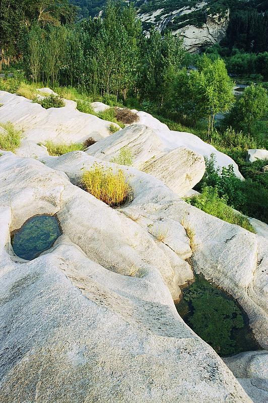

柒郎2014-01-18 22:043 分
性价比 3.00色彩还原 3.00分辨率 3.00锐利度 3.00颗粒度 3.00反差 3.00色饱和度 3.00宽容度 3.00倒易率允许 3.00
siliconworm2010-10-19 13:46

Pantrol2010-03-26 01:024.78 分
性价比 5.00色彩还原 5.00分辨率 5.00锐利度 5.00颗粒度 4.00反差 5.00色饱和度 5.00宽容度 4.00倒易率允许 5.00
xjtuchine2009-10-14 15:564.11 分
性价比 4.00色彩还原 4.00分辨率 4.00锐利度 4.00颗粒度 3.50反差 4.00色饱和度 5.00宽容度 4.50倒易率允许 4.00
siliconworm2009-09-26 11:444.89 分
性价比 5.00色彩还原 4.00分辨率 5.00锐利度 5.00颗粒度 5.00反差 5.00色饱和度 5.00宽容度 5.00倒易率允许 5.00
上帝武装2009-09-12 00:084.22 分
性价比 4.00色彩还原 4.50分辨率 4.00锐利度 4.50颗粒度 3.50反差 4.50色饱和度 4.50宽容度 4.50倒易率允许 4.00
reffni2008-12-07 21:323.94 分
性价比 4.50色彩还原 4.00分辨率 3.50锐利度 4.00颗粒度 3.50反差 4.00色饱和度 4.00宽容度 3.50倒易率允许 4.50
hunter06182008-06-11 21:243.83 分
性价比 3.50色彩还原 3.50分辨率 4.00锐利度 4.00颗粒度 3.50反差 3.50色饱和度 4.00宽容度 4.00倒易率允许 4.50
迅2007-12-28 14:174.67 分
性价比 5.00色彩还原 5.00分辨率 4.50锐利度 4.00颗粒度 4.00反差 4.50色饱和度 5.00宽容度 5.00倒易率允许 5.00
raptorz2007-09-05 10:104.5 分
性价比 4.50色彩还原 5.00分辨率 4.50锐利度 4.50颗粒度 3.50反差 4.50色饱和度 5.00宽容度 4.50倒易率允许 4.50